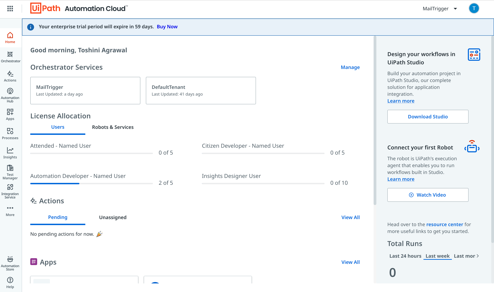
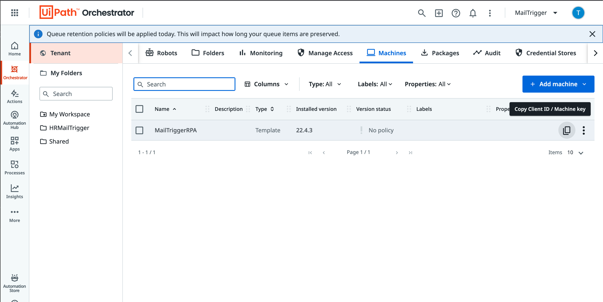
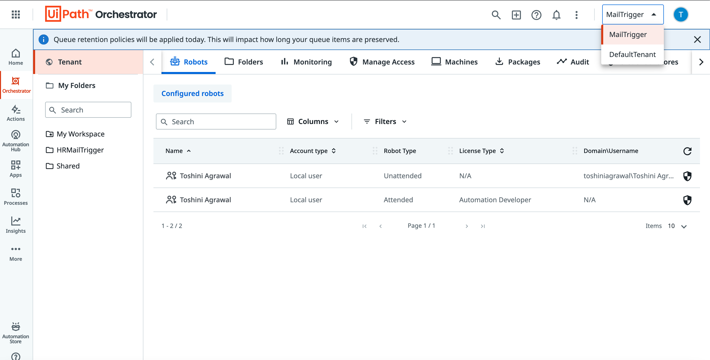
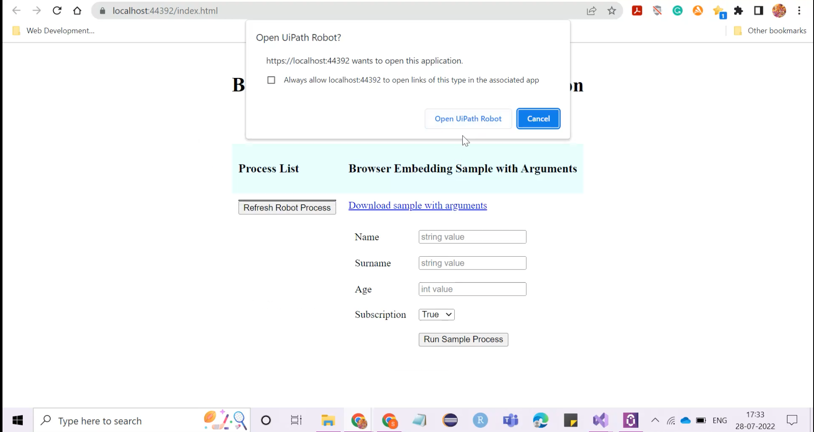
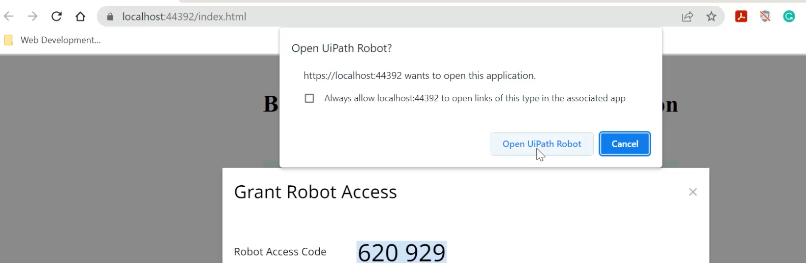

UiPath Assistant
Step 1: Make an account on Orchestrator and get an enterprise account for the orchestrator.
Step 2: Get a link on your designated email ID for logging into the cloud.UiPath.
Step 3: On the home tab, there will be a clickable link on the bottom right side named “Resource Center”.
Under the heading featured downloaded ,in the section assistant for Windows click on the link which suits your system version.
For example, for Windows it would be Windows XP,Windows 10 and Windows 7

Microsoft SQL Server and SQL Server Management Studio
Step 1: Click on SQL Server and download SQL Server 2019 Express.
Step 2: After installing it ,on the final screen a button to install SSMS will appear (SQL Server Management Studio). Install the studio through that on the system.
(Note: Make sure the version of SQL Server is the same as that of Management studio)
UiPath Assistant
Step 1: Open the UiPath Assistant from the system and click on sign in button. Enter the details (username/password) which were fed into the orchestrator.
Step 2: Click on the name in the top right corner and select preferences. Go to orchestrator settings.
Step 3: Choose Machine key as the connection type and ask for your machine name from IT department.
Step 4: Go to the orchestrator and copy the url till before “/orchestrator_” .For example, the url should look something like this https://cloud.uipath.com/jatayu/MailTrigger.
Here, “jatayu is the organisation's name and “MailTrigger” is the tenant name mentioned in the upper right corner of the orchestrator dashboard.
Step 5: Now for the machine key, go on to the orchestrator dashboard and click on tenant block situated just beside the leftside nav bar and select “Machines”.
Step 6: Copy the Client ID as shown in the screenshot below and paste it on the UiPath assistant.

Step 7: Click on Connect button and Voila! A green light should appear on the top right corner and it is connected to the orchestrator.
(Incase of license unauthorised error,please check that you have chosen the organisation's tenant and not default tenant)

Step 8: When the onboard page is loaded a pop-up appears on the screen which looks something like this

Step 9:Click on "Open UiPath Assistant" and keep in store the access code as shown in the screenshot

SQL Server Management Studio
After uploading the SQL Query in the SSMS, the verification is done and the login is connected with the database.
One Drive(Power Automate Integration)
Login to One drive through the business ID provided which will initiate the connection with the Power Automate. Hence triggering the alerts automation.
This connection is completely automated,hence the user doesn't need to worry about triggering any button for the process.